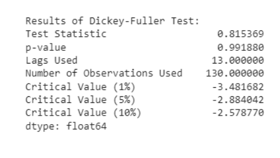
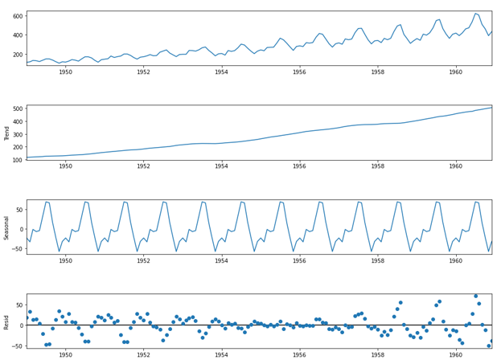
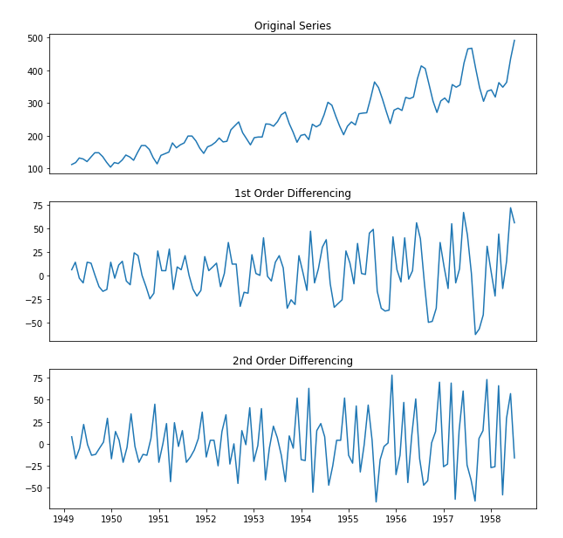
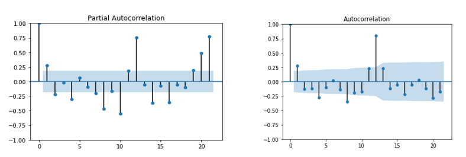
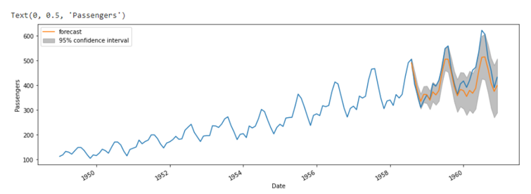

The dataset used here is Air passengers data and was obtained from Kaggle.This dataset provides monthly totals of US airline passengers from 1949 to 1960.
Time Series Forecasting using ARIMA Model on Air Passenger Dataset
An extension of the simple autoregressive moving average model is the autoregressive integrated moving average or ARIMA. These two models are employed to forecast or predict upcoming time-series data points. Regression analysis in the form of ARIMA shows how strong a dependent variable is in comparison to other varying factors.
The model's ultimate goal is to forecast future time series movement by focusing on discrepancies between series values rather than actual values. In situations when the data exhibits signs of non-stationarity, ARIMA models are used. Non-stationary data are always converted into stationary data in time series analysis.
This project aims at using ARIMA model on Air Passengers dataset
Dataset.
Steps required to build the model
Step 1 ---> Check Stationarity: If a time series has a trend or seasonality component, it must be made stationary
Step 2 ---> Determine the d value: If the time series is not stationary, it needs to be stationarized through differencing.
Step 3 --> Select AR and MA terms: Use the ACF and PACF to decide whether to include an AR term, MA term, (or) ARMA
Step 4 --> Build the model
Checking if the dataset is stationary
I checked the stationarity of the dataset by performing Augumented Dickey-Fuller Test. The below image shows the result of the test. As the value of p is greater than 0.05, it suggests that the data is not stationary

To make the data stationary, I performed the decomposition of data.
Sesonal Decomposition
The dataset was split into train and test sets
Finding the value of the d parameter
Finding the values of parameter p and q
Forecasting Result
For detailed resutls of analysis and code please visit github from the below link.
View on Github